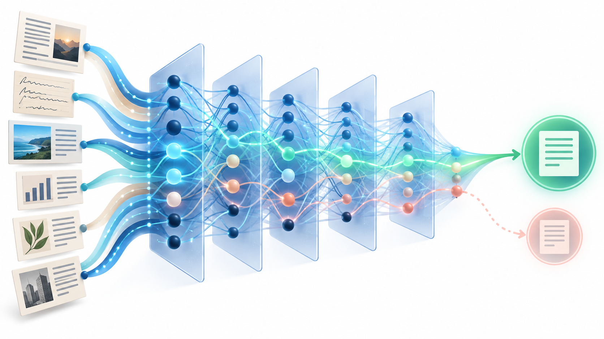

How AI learns, why it can answer without searching, and why it can confidently get things wrong
Ask ChatGPT a simple question:
Who was the first president of the United States?
It will answer George Washington almost immediately.
It probably did not search the internet. It did not open an encyclopedia or query a database of presidents. Unless you asked it to research the question, it may not be able to tell you which book, website, or document established the fact.
So how does it know?
The answer helps explain one of the most confusing things about large language models. An AI can know an extraordinary number of things and still produce a false statement with complete confidence.
To understand hallucinations, it helps to first understand how an LLM knows anything at all.

It starts with training data
Large language models are trained on very large collections of information. The exact mix varies by model and provider. OpenAI, for example, says its foundation models use publicly available information, information accessed through partners, and information provided or generated by users, human trainers, and researchers.
Imagine that the training material contains many sentences like these:
- George Washington was the first president of the United States.
- America's first president, George Washington, took office in 1789.
- Who was the first U.S. president? George Washington.
- Washington served as the nation's first president from 1789 to 1797.
An LLM is not simply collecting those sentences into a giant searchable database. It is learning patterns and relationships from them.
That learning begins with something surprisingly basic: numbers.
Step 1: Turn text into numbers
Computers do not understand the word king the way a person does. They work with numbers.
Before a model can process a sentence, the text is divided into units called tokens. A token can be a whole word, part of a word, punctuation, or another piece of text.
The model represents those tokens with lists of numbers called vectors. A simple vector might look like this:
[3.2, 1.7, 4.6]
You can picture those three numbers as a location in a three-dimensional space. Draw an arrow from zero to that location, and the arrow is a vector.
Real model representations are much larger and more complex. The useful idea is simply that language can be represented mathematically, allowing a computer to compare and transform relationships among pieces of text.
Step 2: Relationships appear in the numbers
Now imagine mathematical representations for king, queen, man, woman, dog, cat, president, country, Paris, and France.
When concepts appear in related contexts across large amounts of text, their numerical representations can develop useful relationships. One famous result from early word-embedding research was:
King - Man + Woman ≈ Queen
The researchers did not explicitly program the rule that a female king is called a queen. The system learned a relationship from patterns in language. The numerical direction from man to woman resembled the direction from king to queen.
This is a helpful teaching example, but it is not a literal diagram of how ChatGPT stores facts today. Modern Transformer models are much more sophisticated. Their internal representations change with context and move through many layers. Knowledge is distributed across many learned parameters, not stored as tidy pairs of word vectors.
Step 3: Add more dimensions than we can draw
We use two or three dimensions in illustrations because humans can see them.
A computer does not share that limitation. A vector can contain hundreds or thousands of numbers. We cannot draw that space, but a model can still calculate within it.
Those extra dimensions let the system represent far richer patterns than the king and queen example suggests. They also give the model room to distinguish meaning based on context.
Step 4: Context changes what a word means
Consider the word bank:
- She deposited her paycheck at the bank.
- They sat on the bank of the river.
The spelling is identical, but the meaning is not.
Modern language models do not have to give bank one permanent representation. As a sentence passes through the model's layers, surrounding words influence how each token is represented. In the first sentence, bank develops relationships with ideas such as money, deposits, loans, and accounts. In the second, it moves toward rivers, water, shores, and streams.
This ability to account for relationships among different parts of the input is central to the Transformer architecture used by modern LLMs. The architecture's attention mechanism helps the model weigh relevant parts of a sequence while building context.
You do not need the mathematics of attention to understand the central point: the model continually transforms numerical representations based on the language around them.
Step 5: Predict, compare, adjust, repeat
One of the basic tasks used to train a language model is predicting what comes next.
Suppose a piece of training text says:
The dog chased the _____.
Early in training, the model's prediction might be poor. After seeing enormous amounts of language, it becomes much better at estimating which continuations fit the context. It might assign far more probability to ball than to democracy.
During training, the prediction is compared with what actually appeared in the text. The numerical values inside the model, called weights or parameters, are adjusted slightly so future predictions improve.
Then the process repeats:
- Read training text.
- Predict the next token.
- Compare the prediction with the actual token.
- Adjust the parameters slightly.
- Try again across an enormous amount of data.
The training material itself supplies the target. A person does not need to label every completion by hand.
Step 6: Billions of small adjustments become learned knowledge
Now return to George Washington.
The model may encounter his name in many contexts involving president, United States, first, 1789, Revolutionary War, Virginia, and Mount Vernon. Every example can contribute a small adjustment to the model.
There is no need for one internal record that says:
FIRST_US_PRESIDENT = GEORGE_WASHINGTON
Instead, the relationship becomes distributed across the network. Eventually, when someone asks who the first U.S. president was, George Washington is overwhelmingly consistent with what the model has learned.
The model can answer without looking it up.
Researchers often call this parametric knowledge. It is information learned during training and incorporated into the model's parameters. The model can use that information without retrieving the original source.
So where did the source go?
This is one of the clearest differences among an LLM, a search engine, and research.
- LLM: An answer generated from learned internal patterns.
- Search: External information and links to possible sources.
- Research: A conclusion supported by identifiable and evaluated evidence.
Many people know that George Washington was the first president without remembering the teacher, textbook, documentary, or conversation where they first learned it. They retained the conclusion but lost its provenance.
An LLM does not remember like a person, but the analogy is useful. Learned information can remain available even when the system producing the answer cannot point to its original source.
Modern AI products can also search the web, retrieve documents, and perform research. Those are additional capabilities layered around or connected to the model. They should not be confused with the knowledge already encoded in the model's parameters.
This is also the beginning of hallucination
Ask who the first U.S. president was and the model says George Washington. Correct.
Now ask about an obscure person, a little-known company, or a book that received almost no attention.
The model is still doing what it was trained to do: generating the next token based on learned patterns and the current context.
But the relevant patterns may be weak. Sources may conflict. The fact may have appeared rarely. Two real people may have similar biographies. Several accurate details may be combined into an event that never happened.
The model can still produce an answer, and that answer can sound exactly as fluent as the George Washington response.
That is the central connection. The mechanism that lets an LLM answer without searching is closely related to the mechanism that can produce something that sounds like knowledge but is false.
This does not mean vectors alone cause hallucinations. Hallucination is broader than that. It can reflect the training objective, the available data, the prompt and context, the way a response is generated, and the incentives used during later training and evaluation.
Recent OpenAI research highlights another important factor: systems are often rewarded for guessing rather than admitting uncertainty. If a benchmark gives a model no credit for saying "I don't know," a lucky guess can score better than an honest refusal. That can encourage confident answers even when evidence is weak.
Post-training shapes how the knowledge is used
Pretraining gives a model much of its general language ability and learned information. Developers then use additional stages, generally called post-training, to shape how the model responds.
Post-training can include human-created examples, preference feedback, reinforcement learning, automated feedback, and other methods. It can make a model more helpful, safer, and better at following instructions.
A useful approximation is that pretraining builds much of the model's general capability and post-training shapes how that capability is used. The boundary is not absolute. Post-training can also change knowledge and capabilities.
Knowing is not the same as proving
This distinction matters most when the consequences of being wrong are high.
If you ask an LLM to explain photosynthesis, suggest workshop topics, or brainstorm product names, you may be comfortable using its learned knowledge without demanding a source for every sentence.
If you ask what a new regulation requires, what a company reported last quarter, or what current medical evidence says about a treatment, an unsupported answer is not enough. You need evidence.
That may require the AI to search current information, retrieve authoritative documents, compare sources, or conduct research with citations you can verify.
The practical question is not only, "Can the AI answer?"
It is also, "What is supporting the answer?"
An LLM can generate an answer from what it learned. Search can retrieve information. Research can establish and document the evidence supporting a conclusion. Modern AI products can combine all three, but users still need to know which mode is doing the work.
When ChatGPT answers instantly, the interesting question may be, "How does it know?"
When the answer matters, ask one more:
Can it prove it?
Sources and further reading
- OpenAI: How ChatGPT and our foundation models are developed
- Vaswani et al.: Attention Is All You Need
- Mikolov, Yih, and Zweig: Linguistic Regularities in Continuous Space Word Representations
- Roberts, Raffel, and Shazeer: How Much Knowledge Can You Pack Into the Parameters of a Language Model?
- OpenAI: Why language models hallucinate
FutureInSites helps small businesses use AI with a clear understanding of the task, the evidence, and the cost of being wrong. Get in touch if your team needs help choosing or building dependable AI tools.